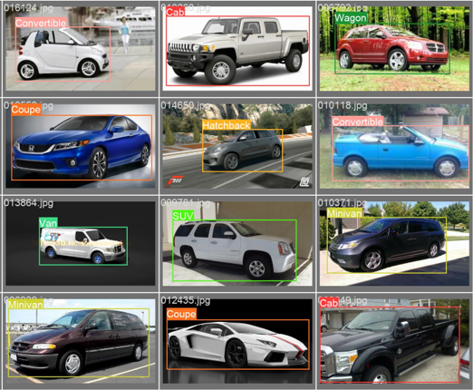
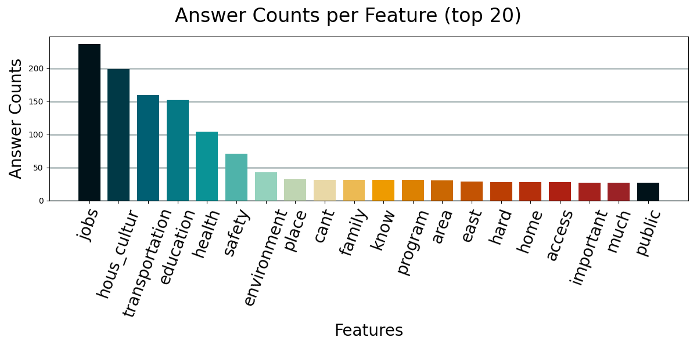
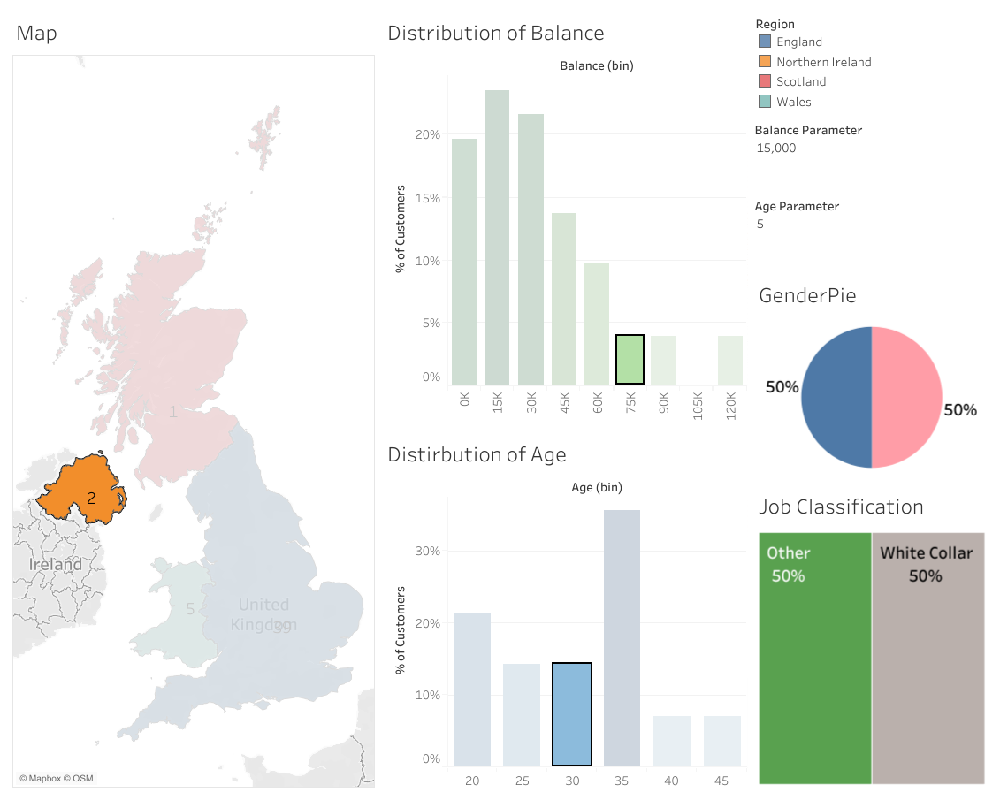

Vehicle Type Detector
Object Detection | Model Training | Python
Trained a Neural Network model (Yolov4) to identify different types of vehicles with transfer learning. Re-defined existing dataset and automated image checks.
Demonstrates: Neural Networks, Check Automations, Dataset Evaluation
Tools: Python (pandas, numpy, scipy), YOLOv4, Google Coolab, VS

Open-Ended Response Explorer
NLP | Clustering | Python
Built a survey analysis tool that allows the user to extract valuable insights from open-ended feedback. Demonstration with a case study: identify needs of a community.
Demonstrates: Vector Space Model, Similarity Function, Effective Visualizations
Tools: Python (nltk, scikit-learn, pandas, numpy, pyplot)

Smartwatch Calorie Prediction
Machine Learning | Regression models | Python
AOptimized Calorie prediction algorithm per smart watch user. Best regression model is chosen based on previousluy collected smart-watch data.
Demonstrates: Statistical Analysis, ML Models, Data Mining
Tools: Python (scikit-learn, pandas, numpy, pyplot, seaborn)

Business Customer Segmentation
Interactive Dashboard Design | Tableau
Bank Customer segmentation dashboard. Focused on demographics, age, gender, balance. Powerful for marketting strategies. Part of this Udemy Course, on Tableau.
Demonstrates: Effective Visualizations, Interactive Dashboards, Business Insights, Customer Segmentation
Tools: Tableau (Mapping, Filtering, Table Calculations, Interactive Dashboards)

User analytics for a bike sharing company
Exploratory Analysis | Python
Customer data analysis for a bike sharing company. The goal is to identify
key differences between the two user groups, in order to plan future marketing strategies.
Demonstrates: Data cleaning, Data Exploration, Visualizations, Findings communication
Tools: Python (pandas, pyplot, numpy)

Covid 19 data exploration through queries
Data exploration | SQL
Exploring data of the Coronavirus pandemic, identifying trends for different countries. It demonstrates some of the SQL functions. Part of this SQL training.
Skills used: Joins, CTE's, Temp Tables, Windows Functions, Aggregate Functions, Converting Data Types
Tools: SQL (Standard), Google BigQuery